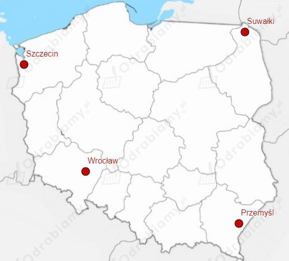
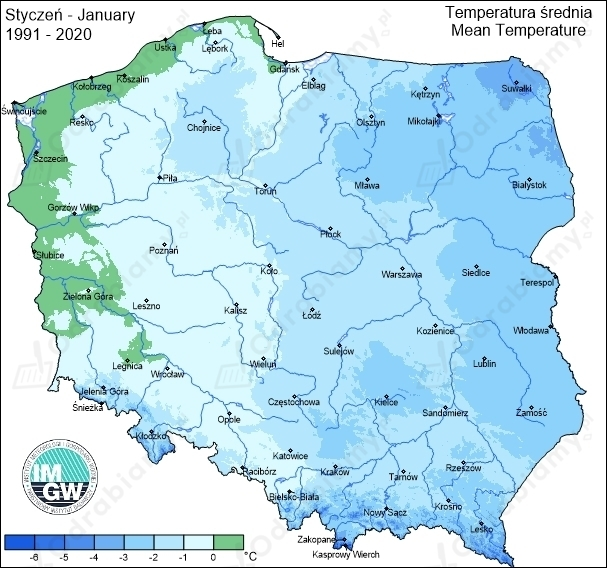
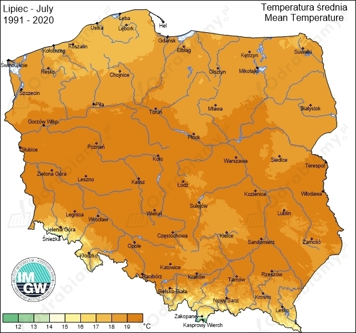

Woda ma najmniejszą objętość w temperaturze 4°C - czyli ma największą gęstość w tej temperaturze.
Zatem wykres a) przedstawia zależność objętości wody od temperatury, a wykres b) przedstawia zależność gęstości wody od temperatury.
W obu przypadkach a) i b) temperatura na dnie jeziora Wigry była taka sama i wynosiła 4°C.
Woda o temperaturze 4°C ma największą gęstość i zawsze opada na dno zbiorników wodnych. Dla głębokich zbiorników wodnych temperatura wody na ich dnie jest stała i zawsze równa 4°C bez względu na warunki atmosferyczne panujące nad powierzchnią zbiornika wodnego.
Dane:
Szukane:
Rozwiązanie:
Dzięki zmianie temperatury wielbłąda ogranicza on parowanie wody. Możemy zapisać, założenie równości ciepła ze zmiany temperatury ciała wielbłąda z ciepłem do odparowania wody.
Stąd:
Wielbłąd oszczędza około 3,5 kg wody.
Położenie wybranych miast na mapie Polski:

Mapa średniej temperatury na terenie Polski dla stycznia (lata 1991-2020).

Źródło: klimat.imgw.pl
Mapa średniej temperatury na terenie Polski dla lipca (lata 1991-2020).

Źródło: klimat.imgw.pl
Odczytujemy z zamieszonych map potrzebne informacje odnośnie średnich temperatur dla wybranych miast:
| MIASTO | STYCZEŃ | LIPIEC |
| SZCZECIN | 0°C | 18°C |
| SUWAŁKI | -4°C | 17°C |
| PRZEMYŚL | -3°C | 18°C |
| WROCŁAW | -1°C | 19°C |
Amplitudy temperatur dla poszczególnych miast dla danych ze stycznia i lipca:
| SZCZECIN | |
| SUWAŁKI | |
| PRZEMYŚL | |
| WROCŁAW |
Najniższą temperaturę zanotowano w Suwałkach, a najwyższą we Wrocławiu.
Największą amplitudę temperatur zanotowano dla Suwałk i Przemyśla, a najmniejszą dla Szczecina.
Duże miasta ze względu na mocno zurbanizowaną formę terenu charakteryzują się gorącymi latami i ciepłymi zimami - przykład Wrocławia.
Szczecin natomiast jest położony blisko ujścia do Bałtyku. Tereny otoczone zbiornikami wodnymi będą charakteryzować się najmniejszymi amplitudami temperatur. Woda latem będzie skutecznie ochładzała klimat, a zimą ocieplała go. Dzieje się tak ze względu na duże ciepło właściwe wody, co pozwala na oddawanie lub pobieranie z otoczenia dużych ilości energii.
Suwałki są położone na północnym-wschodzie Polski, gdzie klimat jest zimniejszy.
Przemyśl to małe miasto położone na południowym wschodzie Polski, gdzie tereny są górzyste i występują niższe temperatury zimą.